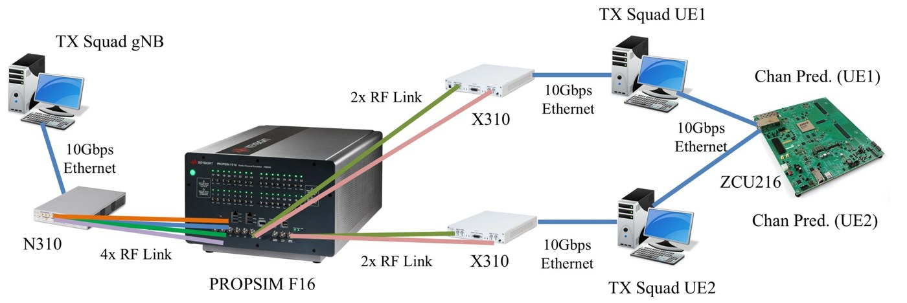
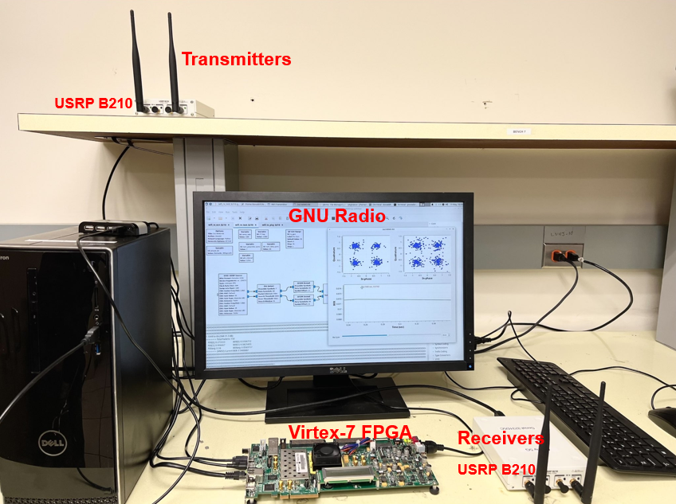
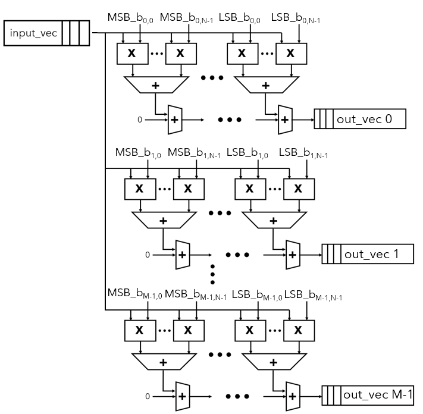

Hi, I'm Chunxiao.
I am a Ph.D. student at Virginia Tech, advised by Prof. Yang (Cindy) Yi, and a member of BRICCS@VT (Brain-Inspired Computing, Communication, and Security Lab). I design hardware from RTL microarchitecture to complete systems: FPGA accelerators for echo state networks (reservoir computing) with on-chip learning, and the system-level design around them (HW/SW partitioning, 10G Ethernet data paths, host software and integration with live radios) that runs them in real-time wireless systems for MIMO symbol detection and channel prediction.
Before Virginia Tech, I received my master's degree in Electrical and Computer Engineering from the University of Southern California and my B.E. in Opto-electronic Information from Huazhong University of Science and Technology.
Live demo
Real-time channel prediction on an FPGA. A base station and its users must know the radio channel, which is how the signal is distorted on the way. When users move, that knowledge goes stale within milliseconds. Here an FPGA accelerator learns how the channel changes and predicts the next one, live, for two users at once.

Highlighted projects

A complete echo state network on one FPGA: inference and recursive-least-squares (RLS) training share the same DSP arrays, so the channel predictor retrains itself on chip.

Nine DSP slices multiply-accumulate while a CLB adder tree compresses their partial sums, so the DSPs never sit idle; a range-addressable tanh keeps the activation cheap.

A DSP48E1-array reservoir neuron for 2×2 MIMO-OFDM symbol detection, tested over the air with an SDR platform (PC, Virtex-7 FPGA and two USRPs running a GNU Radio Wi-Fi link).

A low-cost reservoir neuron that hard-wires the fixed, sparse ESN weights into a bit-serial multiplier, with canonical-signed-digit encoding and an optimized tanh.
All projects
- On-chip RLS learning for MIMO channel prediction
- Hybrid DSP–CLB reservoir neuron
- Bit-serial reservoir neuron
- Real-time 10G Ethernet PC–FPGA testbed for distributed MIMO
- DSP-based ESN and SDR/FPGA platform for MIMO-OFDM detection
- Scalable ESN symbol detector for massive MIMO-OFDM
- SPARC: spiking reservoir computing with on-chip R-STDP
- Legendre-SNN on Loihi-2
- Surveys of reservoir computing and echo state networks
- AI for circuit and system design
- Dynamically secured scan chains and the GF-Flush attack
- Low-power 10T-SRAM for in-memory computing
- 4-node cardinal chip multiprocessor
- CPU hardware system design
- …